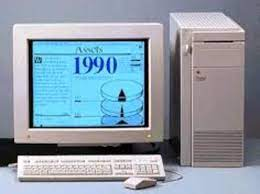
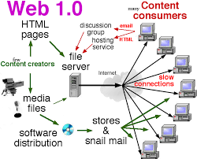
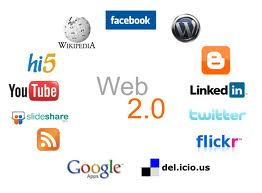
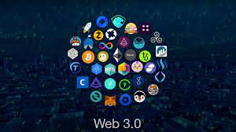

Tabla de datos de clientes |
|||
| HITOS | HECHOS | IMAGENES | REFERENCIAS |
|---|---|---|---|
| Internet | Aparecen : MILNET: caracter militar. INTERNET: naturaleza publica, orientada al mundo académico, científico e industrial. |  | editorial, E. (2014, August 15). Internet - Concepto, tipos, servicios, usos y navegadores. Concepto.link |
| Web 1.0 | En la web 1.0 la información era unidireccional y el papel de las personas únicamente era consumir el contenido. Era la forma más básica que adoptó Internet. Durante esta época los CMS no existían, y WordPress no era la base de la gran mayoría de las webs que se alojan en Internet. |  | Estudio, T. (2022, November 22). Web 1.0, web 2.0 y web 3.0. Torresburriel Estudio.link |
| Web 2.0 | La web 2.0, también conocida como la web social, se caracterizó por la creación y el intercambio de contenidos por parte de los usuarios. Plataformas como blogs, redes sociales y sitios de alojamiento de videos permitieron a los usuarios generar contenido y colaborar en línea. |  | García, M. (2017, June 30). ¿Qué es y para qué sirve la web 2.0? Aula 10 Centro de Formación. link |
| Web 3.0 | El objetivo de la Web 3.0 es el de crear webs más inteligentes, conectadas, abiertas y adaptadas a cada usuario. En este contexto, los usuarios pueden crear contenido mientras lo poseen, controlan y monetizan a través de la implementación de tecnología blockchain y criptomonedas o NFTs |  | ecanorea. (2022, January 20). Web 3.0: La Nueva Revolución Internet. Plain Concepts. link |
| Web 4.0 | La web 4.0 es aquella en donde la experiencia del usuario es elemental al diseñar o crear plataformas, productos y servicios. "Se potencia la web semántica con el aporte de la inteligencia artificial para así proveerle a los consumidores una mejor experiencia". | ¿Qué es la web 4.0 y por qué debes estar preparado para lo que se viene? (n.d.). Conexión ESAN. Retrieved February 26, 2024, from link |
|